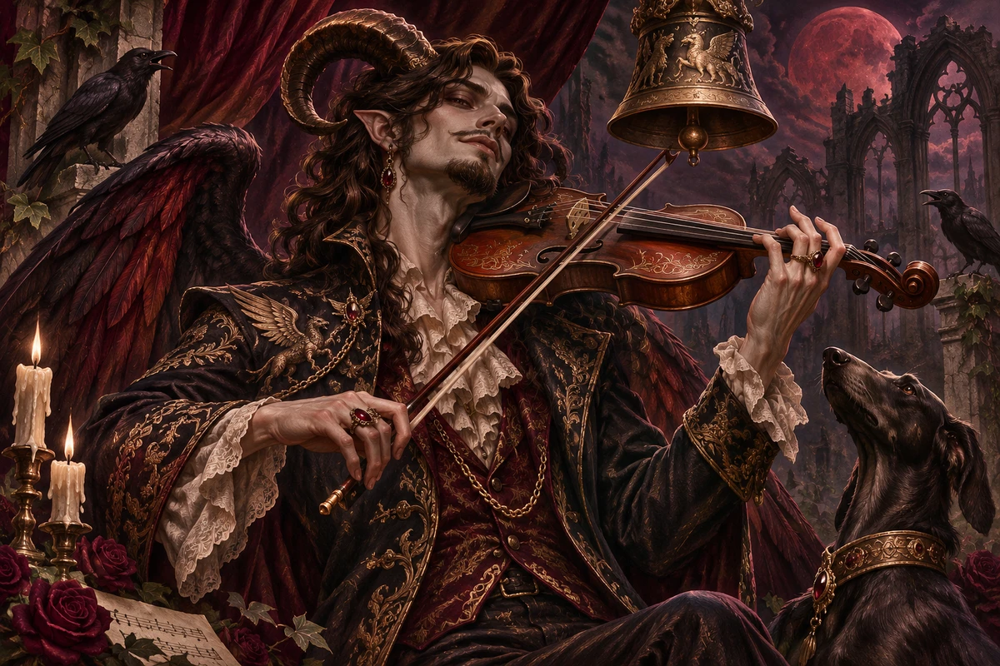
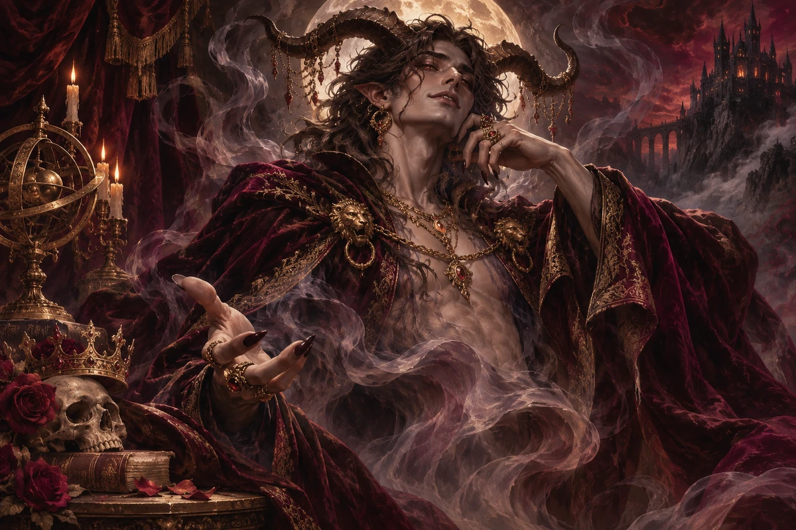
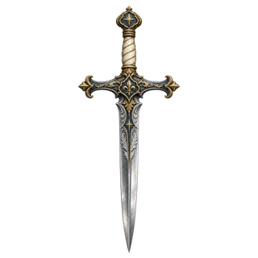
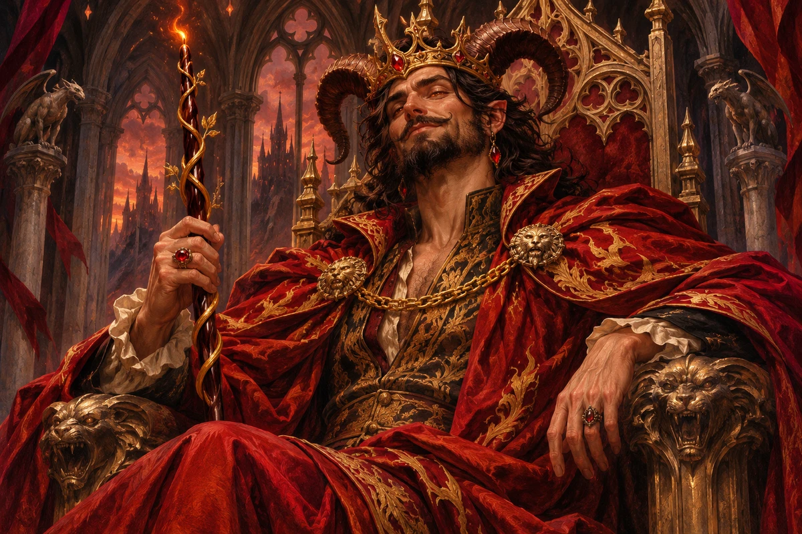
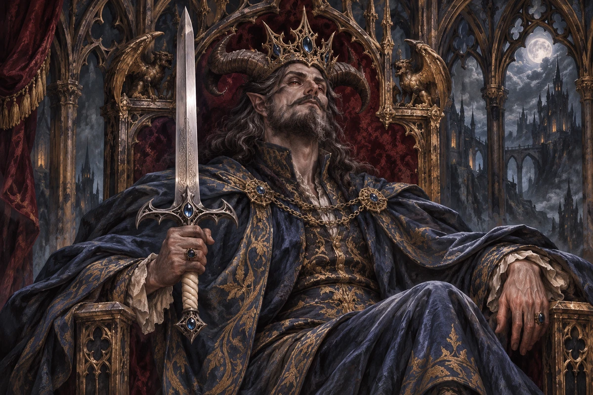

10
10
3–5 PLAYERS · FIVE ROUNDS · ILLUSTRATED RULEBOOK
A game of exact promises and infernal interference.
You are a lesser demon with a grand ambition: become Hell’s Master Bell-Ringer. Your rivals have sharp claws, strange powers, and a talent for ruining a perfectly good plan.
Your job is simple: win exactly as many tricks as you promised. No more. No fewer.
Each round, shape your hand, make your bid, and try to keep your word while the other imps meddle.

Discard what you don’t want.
Bid your exact number of tricks.
Steer your hand toward that number.
Bid two? You want two wins. That tempting third trick may be somebody else’s problem.
01 · BEFORE THE FIRST BELL
Gather a tarot deck, the ten imp cards, and something to record scores. Separate the cards into three groups.
TRUMP · Wands
After discarding, each player may discard one more card and draw a random reserve card.

Now You See Me
Play a legal card face down. Reveal it after everyone plays. If leading, announce its suit.


Low → high: Ace, 2–10, Page, Knight, Queen, King.
Keep the undealt reserve, discarded cards, and won tricks in separate places. You’ll use them differently.
02 · ONE BELL AT A TIME
A trick is one card played by each player. The leader plays first. Go clockwise: if you have that suit, you must follow it; otherwise play any card. The winner takes the trick and leads next.
The round card names trump: a suit that beats the others. With no trump in the trick, the highest card of the suit led wins.
In all three examples below, Swords are trump.

King
Cups03 · YOUR FIRST ROUND
Here’s a four-player first round. Reveal a regular round card, read its rule, and note trump. Shuffle all 56 playing cards, reserve four face down, and deal 13 to each player.
Look for the tricks your hand might win. High cards and trump are useful, but only if you want those wins. Discard one chosen card face down. You now have 12 cards and will play 12 tricks.

King
Wands
King
SwordsResolve the round card’s pre-bid effects first, then any imp powers. Starting left of the dealer, announce the exact number of tricks you plan to win. Zero is a valid bid. The dealer bids last.
The player left of the dealer leads first. Play tricks until your hands are empty. Keep your bid in sight: once you have your promised wins, you may need to find a way to lose!
The same hand can support different plans. Your bid is a promise, not a target to exceed.
04 · A LITTLE INFERNAL INTERFERENCE
Your imp is your way to bend the rules. Read its trigger: a power might happen before bidding, on your play, or after you win a trick. Most powers are optional and usable once each round. Mark yours when spent.
Now You See Me
Play a legal card face down. Reveal it after everyone plays. If leading, announce its suit.
Bael plays a card face down. Your rivals still have to choose their cards before they see what you played.
Discordant Chime
On your play, play any card. Its suit becomes the led suit for this trick.
Amdusias can change the led suit with his own card. A trick that looked lost may suddenly come your way.

Caught Red-Handed
After each trick you win, expose one random unrevealed card from an opponent’s hand. It stays visible until played.
Andromalius reveals an opponent’s random card after every trick he wins. Everyone can use that information.
Imp cards are public. A thief may change your hand after a win; a seer may know something you don’t. Watch who has already used their power before deciding which trick to chase.
You do not need to memorize all ten powers to begin. Read the imps at your table, and look up an interaction in the reference when it comes up.
05 · THE BELLS GROW LOUDER
You receive the same number of cards each round, but discard more: 1, 2, 3, 4, then 5. Your hand gets smaller and your mistakes become more expensive.
Discard 1
Error × 1
Discard 2
Error × 2
Discard 3
Error × 3
Discard 4
Error × 4
Discard 5
Error × 5
Multiply how many tricks you missed your bid by the round number. Too many and too few cost the same. Exact contracts score zero.

TRUMP · Pentacles
After your first trick win, you may increase your bid by one.
Reveal a new regular card each round. The Empress, for example, lets you raise your bid after your first win.

TRUMP · Cups
The bottom half may miss by one trick without penalty. Larger misses cost the full penalty.
Use a catch-up card for the finale. The Star gives trailing players some room for error.
After scoring each round, gather all playing cards and refresh powers. The player with the fewest points deals next; among ties, take the first eligible player clockwise after the previous dealer.
After round 5, the lowest total wins. Tied winners share victory. Some round cards recover points, but scores never fall below zero.
06 · READY TO PLAY
Deal 17 each; reserve 5.
Play 16 / 15 / 14 / 13 / 12 tricks.
Deal 13 each; reserve 4.
Play 12 / 11 / 10 / 9 / 8 tricks.
Deal 10 each; reserve 6.
Play 9 / 8 / 7 / 6 / 5 tricks.
The checklist describes the ordinary round. Always follow the revealed round card’s timing; the full procedures and exceptions are collected below.
REFERENCE · CONSULT AS NEEDED
Use this section when a card changes the ordinary game or you need an exact ruling.
Finish five rounds with the fewest penalty points. Everyone starts at zero. Tied winners share victory.
Use a tarot deck: 56 Minor Arcana in Wands, Cups, Swords, and Pentacles, plus 22 Major Arcana. Separate the Major Arcana into regular cards (0–XIV) and catch-up cards (XV–XXI). You also need the ten imp descriptions, concealed-choice markers, and a score sheet.
Within each suit, ranks ascend: Ace, 2–10, Page, Knight, Queen, King. Major Arcana never enter playing hands.
Deal each player two distinct random imps. Each chooses one, face up, for the entire game; set the others aside. Choose the first dealer randomly. Play and bidding proceed clockwise.
Each round:
Deal 17 cards each; leave 5 in the undealt reserve. Play 16 / 15 / 14 / 13 / 12 tricks in rounds 1–5, respectively.
Deal 13 cards each; leave 4 in the undealt reserve. Play 12 / 11 / 10 / 9 / 8 tricks in rounds 1–5, respectively.
Deal 10 cards each; leave 6 in the undealt reserve. Play 9 / 8 / 7 / 6 / 5 tricks in rounds 1–5, respectively.
Bid an integer from zero through the number of tricks available, inclusive. Death adds one counted trick to that range.
Dealer’s hook: The sum of initial bids must differ from the total counted tricks available. The Moon suspends this restriction. Later bid adjustments never recheck it; all adjustments must remain within the bid range.
Round penalty = round number × |counted tricks won − final bid|. Exact contracts score zero. Apply the Arcana’s penalty modifier, then its recovery.
Record each round’s original penalty separately. Recoveries are separate negative-point entries; they do not reduce individual round penalties. After scoring each round, floor the cumulative total at zero; unused recovery does not carry forward. The World erases one original penalty from rounds 1–4 in addition to earlier recoveries, subject to the zero floor.
The leader plays a card, establishing the led suit. Each other player plays one card clockwise, following the current led suit if able; otherwise they may play any card. Unless a power says otherwise, the highest trump wins, or, if no trump was played, the highest card of the final led suit. Off-suit non-trumps cannot win.
Trump is fixed by the Arcana. Suppressing its winning advantage does not change the designated trump suit. A changed led suit affects only subsequent follow-suit obligations and winner determination; earlier plays remain valid. Each physical trick belongs only to its winner.
All imp powers are optional and once per round, except Andromalius. Mark spent powers. A completed trick cannot be reopened. At shared pre-bid windows, act clockwise from the dealer’s left. Resolve each effect fully before the next.
Random selections use all eligible cards mixed face down, including publicly known cards. Restore public cards face up afterward. Inspect only as many cards as are available; an effect requiring unavailable cards does nothing. The Hermit’s reserved card is unavailable for play, follow-suit obligations, exchanges, random selections, and inspections until the final trick.
On your play, play any available card and make its suit the led suit. This overrides card-choice restrictions. Players still to act follow the new suit; previously played cards remain eligible under it. Trump is unchanged.
After winning a trick, exchange one chosen available card from your remaining hand with one random available card from an opponent’s hand.
When playing into an ongoing trick, suppress trump’s winning advantage for that trick. Your card must be legal. The highest card of the final led suit wins, except that The Hanged Man’s high/low choice still applies.
On your play, play one legal card face down; reveal it after everyone plays, before awarding the trick. If leading, truthfully announce its suit. An already exposed card may be concealed this way.
After winning a trick, privately inspect two random available cards from one opponent’s remaining hand, then return them.
On your turn, before playing, return any previously played card in the current trick to its owner. They choose a different legal replacement, treating the returned card as absent when determining legality. If none exists, the original stays. Your use is spent either way; then play your card.
On your turn, choose another player still to act in this trick. On their turn, they play a random available card, ignoring follow-suit and other card-choice restrictions.
Before bidding, privately inspect three random available cards from one opponent’s hand, then return them.
After winning a trick, choose another player to lead the next trick. Ownership of the completed trick is unchanged.
After every trick you win, you may expose one random, previously unexposed available card from an opponent’s remaining hand. It stays face up until played, even if exchanged. This power is repeatable.
Each card fixes trump for its round. A round rule applies throughout the round unless its text gives a narrower timing.
Trump: Wands. After normal discards, before bidding, each player may discard one additional chosen card and draw a random replacement from the reserve. Choose the outgoing card before drawing; it goes to discards, not the reserve.
Trump: Cups. Before normal discards, each player may exchange one chosen hand card for a random reserve card. Choose the outgoing card first, draw the replacement, then mix the outgoing card into the reserve. Resolve clockwise from the dealer’s left.
Trump: Swords. Before bidding, each player may privately inspect two random cards from another player’s hand, then return them.
Trump: Pentacles. Immediately after winning their first trick, each player may increase their bid by one. Declining then forfeits the opportunity.
Trump: Wands. Every trick, its leader may declare Royal Command as they lead. Every follower must play the highest card of whichever suit they legally play: highest led-suit card if able to follow, otherwise highest of their chosen suit. Amdusias and Shax override this restriction when using their powers.
Trump: Cups. If unable to follow suit, a player must play designated trump if available. No overtrumping is required. This obligation remains when Furfur suppresses trump advantage.
Trump: Swords. Before bidding, each player secretly chooses another player; reveal choices at scoring. If chooser and chosen player both make their contracts exactly, the chooser recovers two points. Mutual selection is unnecessary.
Trump: Pentacles. Each trick’s winner must lead their highest-ranked available card next trick; choose freely among tied ranks. The first leader and a substitute leader appointed by Seere are unrestricted. Amdusias may override the lead restriction with his power.
Trump: Wands. Every trick is won by the highest card of the final led suit, regardless of trump.
Trump: Cups. Before bidding, each player may secretly reserve one retained card for the final trick. It is unavailable until then and must be played as that player’s final card. Its owner may inspect it.
Trump: Swords. Each player making an exact contract recovers one point.
Trump: Pentacles. Undershooting a bid costs double the normal penalty. Overshooting costs the normal penalty.
Trump: Wands. As they lead each trick, its leader chooses whether the highest or lowest eligible card wins. If effective trump is present, compare only trumps; otherwise compare cards of the final led suit. Changing the led suit or suppressing trump does not change the chosen direction.
Trump: Cups. The final physical trick counts twice for its winner. With T physical tricks, bids range from 0 through T + 1 and the dealer’s hook applies to T + 1. It is impossible for everyone to make their contract.
Trump: Swords. Once per player per round, immediately after winning a trick, adjust your bid up or down by one. This may be used after the final trick, before scoring.
Use standings recorded at the start of round 5 throughout the round. All tied first-place players receive first-place effects; all tied last-place players receive last-place effects. For The Star, select the highest-penalty floor(player count ÷ 2) players, including everyone tied at the cutoff. If everyone is tied, everyone qualifies.
When tied-last players may adjust bids under The Moon or Judgement, each secretly records their final bid, including an unchanged bid if declining, and all reveal simultaneously.
Trump: Pentacles. Before bidding, each last-place player secretly chooses an opponent; reveal choices at scoring. If that opponent misses, recover half their actual round penalty, rounded down. Add your own round penalty before applying recovery.
Trump: Wands. First-place players pay double their normal round penalty for missing.
Trump: Cups. Eligible players may miss by exactly one trick in either direction without penalty. An error of two or more costs the full normal penalty. A forgiven miss is not an exact contract.
Trump: Swords. Submit bids secretly and reveal simultaneously; the dealer’s hook is suspended. Each last-place player may then adjust their bid up or down by one.
Trump: Pentacles. Each exact contract recovers five points, or ten for a player who began in last place.
Trump: Wands. After normal initial bidding with the dealer’s hook, each last-place player may adjust their bid up or down by one or two. The adjustment is exempt from the hook.
Trump: Cups. Each player making an exact contract erases their largest original round penalty from rounds 1–4. Earlier recoveries remain credited. Erase only one round; tied largest penalties allow a choice. Floor the final total at zero.